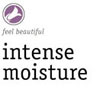
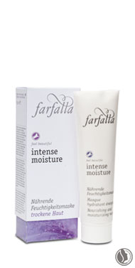
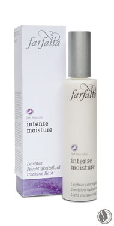

intense moisture
for enhancing skin’s moisture balance
1. Is dermatologically proven to increase the skin‘s
moisture by 25%.
2. Stimulates the production of the skin‘s own collagen.
3. Supports the protective function of the skin.
4. Visibly regenerates and relaxes the skin.
|
 |
Innovative active ingredients
Resurrection plant
This plant grows in desert conditions and, even when dried out, has the unique
ability to expand into a lush flowering plant after absorbing only a small amount
of moisture. The resurrection plant has the same effect on the skin! It contains an
exceptional substance which can restructure denatured enzymes and optimise
the skin’s self-protection. In just one week, the skin’s texture is already improved
and the complexion looks visibly refined.
Hyaluronic acid
This powerful active agent is isolated from wheat. Hyaluronic acid is, in fact,
produced by the skin itself. However, by the age of 35, its production gradually decreases.
Hyaluronic acid is capable of binding water to skin cells, thus increasing
the elasticity of the skin.
Aloe vera
The organic fresh plant extract, isolated from the Aloe vera leaf, supports cell
regeneration, thanks to its rich abundance of minerals, enzymes, trace elements
and vitamins. Aloe vera refills the skin’s moisture depots and, as a result, the skin
is firmed and wrinkles softened.
Macadamia
This organic nut oil, with its exceptional fatty acid spectrum, is highly effective at
smoothing and regenerating skin. It gives the complexion a velvety-soft touch and
intensively nourishes the skin.
|  |
 |
|
Nourishing &
moisturising cream
Nourishes and relaxes skin. The addition of
macadamia oil and shea butter gives complexion
silky-smooth touch. Resurrection
plant extracts improve skin’s protective
role and lend intense moisture. Hyaluronic
acid refills skin’s moisture depots. Centella
asiatica stimulates its own collagen
production. After cleansing/toning, apply
morning and evening. If desired, use Light
moisturising fluid beforehand.
100% from natural origin – 97% of the
certifiable natural substances are organic |
Light moisturising fluid
This light day care boosts moisture.
Resurrection plant extracts improve
skin’s protective role and lend intense
moisture. Hyaluronic acid refills
moisture depots. Centella asiatica stimulates
skin’s own collagen production. Apply after cleansing/toning. If desired,
apply before a skin-specific nourishing
cream.
100% from natural origin – 97% of the
certifiable natural substances are organic |
Nourishing & moisturising mask
Rich in active moisturising ingredients.
Almond oil, jojoba oil and macadamia
nut oil lend intense moisture. Can be
removed easily with warm water. Apply
once or twice a week on cleansed skin
and leave for 15 minutes. Thoroughly
rinse off with plenty of water and enjoy
your silky-smooth complexion.
100% from natural origin – 99% of the
certifiable natural substances are organic |
|